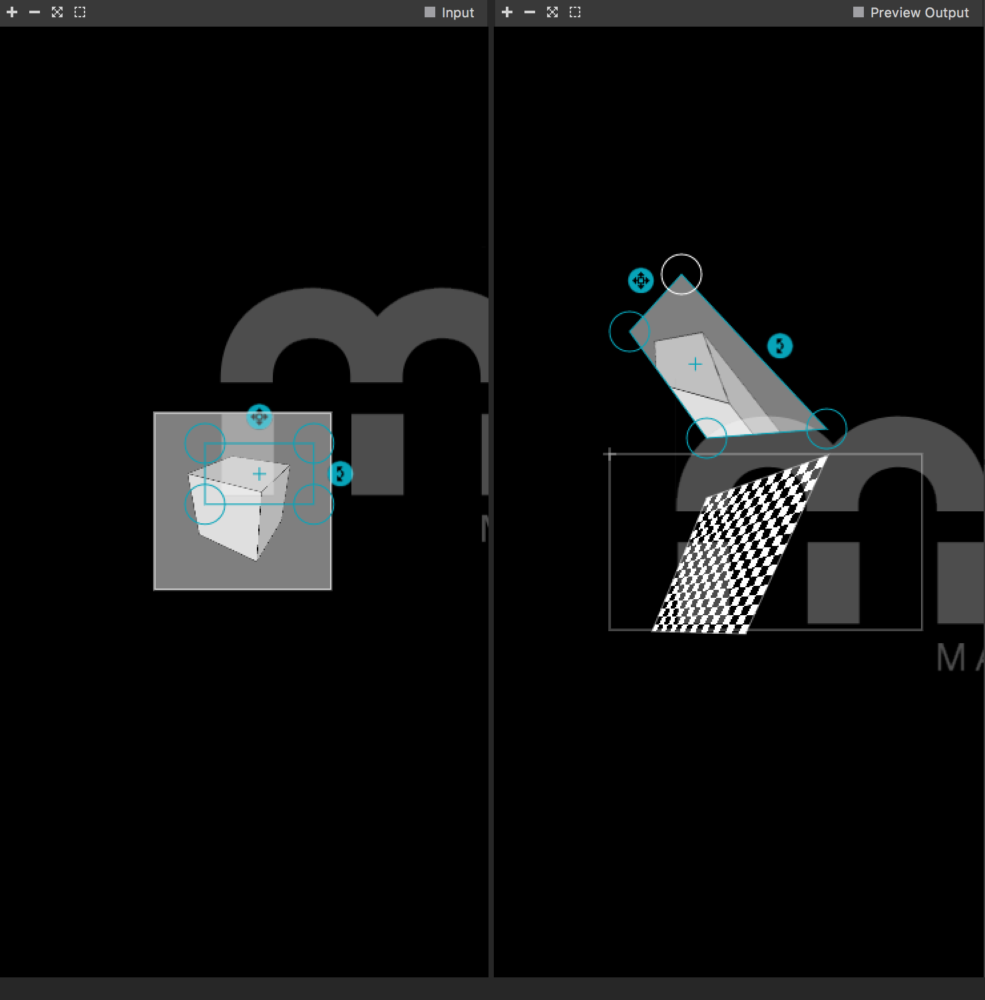

Unity
Hierboven is een game te zien. Deze game is gemaakt met Unity. In deze game, kun je als character verschillende acties ondernemen. Zo kun je dicht naar de auto toe lopen en dan vliegt die in de fik. Ook kun je het vierkanten blok rollen. Daarnaast is er een cirkel aan het spel toegevoegd. Hier kun je als speler overheen lopen. Op het terrein zijn allerlei heuvels te zien, deze kun je als speler ook voor een gedeelte beklimmen.
Madmapping
Bovenstaande Mad-mapper ontwerp heb ik samen met Naomi gemaakt. Aangezien zij geen macbook heeft. Het ontwerp is een schuin vierkant wat geprojecteerd wordt op de kubus.